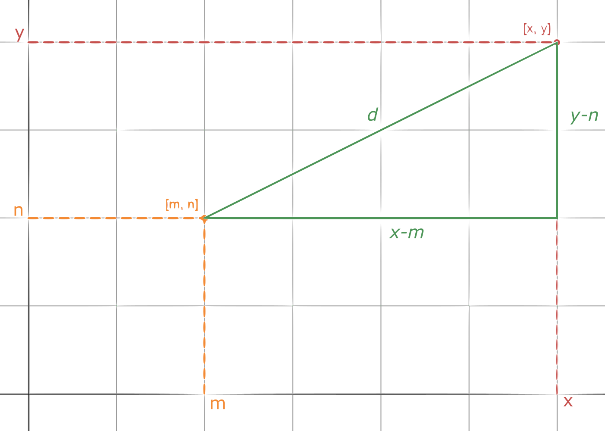
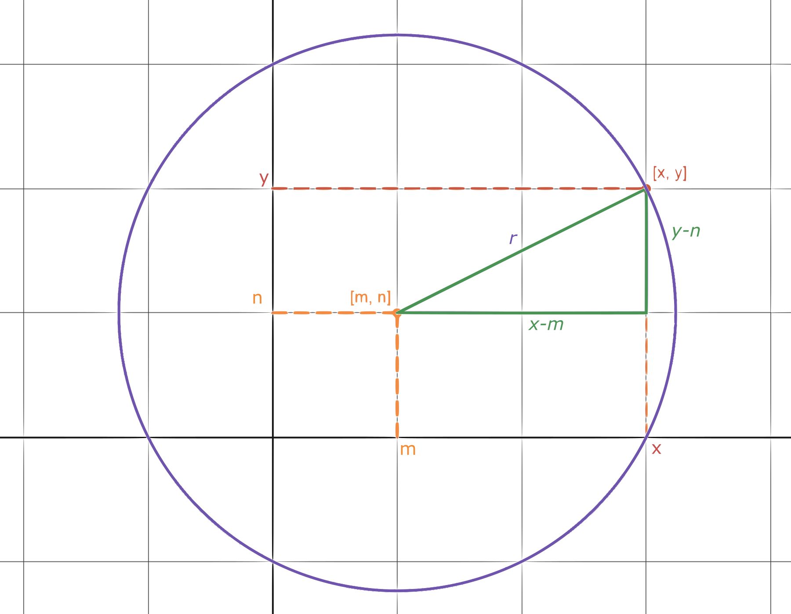

How I ended up engaged with math
Motivation
Well… often times people around me say things like “I hate math. It is hard. I’m not a math person, so I suck at it… Why do we have to learn this subject although it is totally useless in life and is only pain for most of the students?”
You know… I like math and I know a lot about it’s applications thus whenever I hear something like this. I feel kinda sad since I see that a lot of people are missing the real essence of what math really is.
So I thought it would be interesting to write a post about my way with math, how did I become good at it and how I ended up lovin' it.
Past
In my teen-hood I actually had some mathematical achievements. The biggest I guess was winning the district round of mathematical olympiad when I was 14. But I wasn’t really good at math though. Like really. I was only able to win because I was good at solving these simple analytical problems using common sense. But in reality there wasn’t even math involved. We weren’t even able to solve some equations yet. When I look at the young generation. I see so much more potential in them than I do in my-past-self. I didn’t even like math so much. I just liked that there isn’t much to be memorized.
Back then I believed that math is only about intelligence since it was only presented to us this way. So you’re either smart or you’re not and how good your math is only depends on that. I was thinking probably I’ll end up studying math since it’s the only thing I’m good at (or so I thought, cause my idea of math was absolutely terrible). But I felt like I struggled with lots of things and I thought maybe I’m not smart enough to study mathematics. I mean I was one of the best in class, but is it really good enough? I still didn’t have any methodology up to the point when I started to view math in a different way.
Break
Actually I remember this moment quite well. It was in a third year of high school and we just started to learn analytical geometry in math class. It is a topic in math in which you begin to do geometry problems using coordinate system and I found that kinda interesting. We were just learning about a circle equation and suddenly I realised something.
Imagine that you have two points in plane with coordinates \( \lbrack m, n \rbrack \) and \( \lbrack x, y \rbrack \). You can easily calculate the distance \( d \) between those two points using pythagorean theorem.

Thus we have an equation $$ \lparen x-m \rparen ^2 + \lparen y-n \rparen ^2 = d^2 $$ Now just think about our point \( \lbrack m, n \rbrack \) as some fixed point in plane and we want \(d\) to be some fixed/constant positive real value \(r\). Point \( \lbrack x, y \rbrack \) is still some arbitrary point in plane.
If we now think about our original equation, it somehow tells us that if some point \( \lbrack x, y \rbrack \) solves this equation, then it must mean that it lies exactly distance \(r\) from our fixed point \( \lbrack m, n \rbrack \). Or the opposite point of view. If some point is distance \(r\) from our point \( \lbrack m, n \rbrack \) therefore it must solve our equation.

So \( \lbrack m, n \rbrack \) is like coordinates of a center of some circle and \(r\) is it’s radius. And we have it. The actual circle equation that we’re taught in school. $$ \lparen x-m \rparen ^2 + \lparen y-n \rparen ^2 = r^2 $$ Isn’t it beautiful? We were able to express some idea like all points that are distance \(r\) from some center of a circle in one simple equation using coordinates just knowing about pythagorean theorem we’ve been familiar with for about 4 years straight by then.
I was wondering why this beautiful thought process is taken away from us and the circle equation is just taught to us as something to be memorized and yet it is so simple. Actually it was that little understanding that fired up my interest in math. I started questioning myself. Where do all these formulas we’ve had learned come from? Is it possible to derive them in the same way? Now I realize how just thinking about it is so important in math. You will hear that all the time. Math is about asking the right questions.
Definitely the next big thing for me was that very soon later I was able to derive the famous quadratic formula. Solution to the quadratic equation. This formula was something that I didn’t understand at all back then. Even worse… I forgot how stupid memorizing it felt after those years. So deriving it on paper and getting that same ugly formula $$ x_{1/2} = \frac{-b \pm \sqrt{b^2-4ac}}{2a} $$ and understanding where does it came from was so satisfying ego boost to my math skills that I decided to derive everything since then.
Vision of bright future
After this for the first time in my life I started to study some math in my free time at home. I was just doing some puzzles from youtube channel MindYourDecisions and also I found that popular youtube channel Numberphile which was really fun to watch and I learned a lot of interesting things in math. I liked how people from there were doing math with enthusiasm. I thought it was nice they can be so happy just about some number having some properties. Some of that enthusiasm definitely passed to me too.
What I found really interesting was that I was just doing puzzles and watching funny videos about numbers. But it took just about 2-3 months and my math level went absolutely insane. For the next half year I didn’t do any single mistake in any of the exams we were doing and I was finishing them all in halftime. But it’s not just that I got lucky, the exams felt so easy that I knew what were the right answers. So the results didn’t even surprised me. I also had a feeling that I wasn’t learning in class anymore. I was rederiving all the old formulas and I was more like. “Hey, come on teacher, tell me what we will be learning now and I’ll derive all the formulas from scratch.” It was at that time when I realized math actually isn’t about intelligence. It’s about the way you think and your experiences, building connections, looking at things from many different views, asking yourself the right questions. Just do this and your math skills will rise just as mine did.
I heard a words like derivative and integral a little while ago and didn’t understand it at all. If you don’t know what those mean, only thing that matters for this article is to know they are really important ideas in mathematics. So since math class wasn’t really giving me much I had to absorb new knowledge at home. And I did. I discovered what those words really meant and learned some cool applications in physics. It was absolutely new world to me. Derivatives are quite cool. But integrals… If you could imagine a mathematical superpower it would probably be an integral. I will write some article about all usefulness of integrals later. But I used it to derive all the area and volume formulas in high school. I started to watch channel blackpenredpen where I learned how to do the basic calculus (way to compute derivatives and integrals). Later I was watching channel Flammable maths who was doing some crazy hard integrals with advanced techniques. Again it was interesting to me that someone can do so much computing and manipulations just due to enjoy it. Don’t take me wrong, computing integrals is actually really interesting and hard and it takes a lot of creativity and experiences to do it.
Last year in high school before I went to college I also came across a lot of interesting math. I discovered channel 3blue1brown which is just awesome and boosted my passion towards math even more. I was diving deeper into calculus, deriving its formulas in intuitive ways, understanding how are derivatives and integrals even connected. Also slightly touched topics like linear algebra and multivariable calculus and more.
As you go through your path of a mathematician there are a lots of those “Aha” moments when you understand something, realize some cool and deep connection or just learn about some really cool application of math. And every time the feeling you get is a lot of excitement and satisfaction. It’s actually those moments what makes people engage with math. It’s kinda like an addiction to those cool things. You just want more and more.
Still when I was applying math, often times my idea or intuition were just wrong. And it went like this up until the college.
College math
I study general physics at university which has lot of math involved. When I came to college I thought I had already understood essence of math, but… I quickly realised I couldn’t be further from truth. Once again the way I thought about math rapidly changed. Math isn’t about solving some basic problems nor it is about deriving some formulas to solve these problems. It is about understanding a lot about some system and proving non-obvious facts about it. That might seem a little bit abstract for someone who isn’t involved in math yet… but later on that in other topics. Also I said non-obvious facts but you have to prove even the obvious ones since you can’t be really sure they are obvious since you haven’t proved them yet. Sometimes it happens that something seemingly obvious turns out to be false in the end.
In college math, there isn’t place for doubts. Everything has to be reasoned in a right formal way so there isn’t possibility it could be wrong. Maybe it sounds terrible and painful. But after those few years when I have struggled a bit with college math since often times my intuition was wrong. I suddenly could be sure when something is true and when it isn’t. I believe college math is one of the most certainties you could have in your life and it is actually quite pleasant to be absolutely sure about something. I think that is also one of the beauties of mathematics.
Conclusion
So here the story ends I think. Thanks for reading up until this point and be sure to read a next article too.